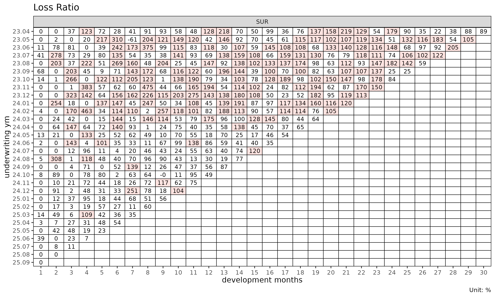
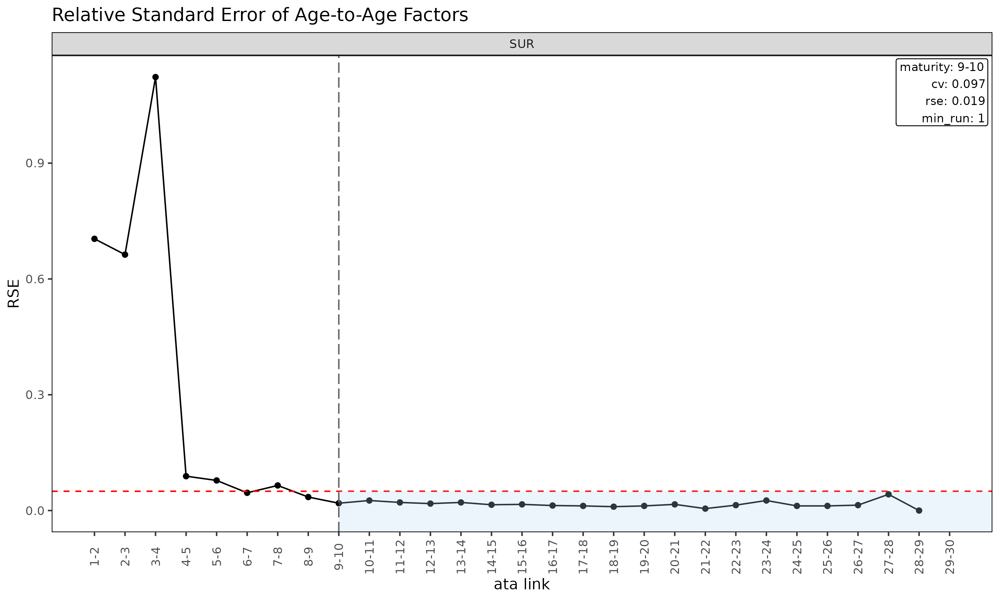
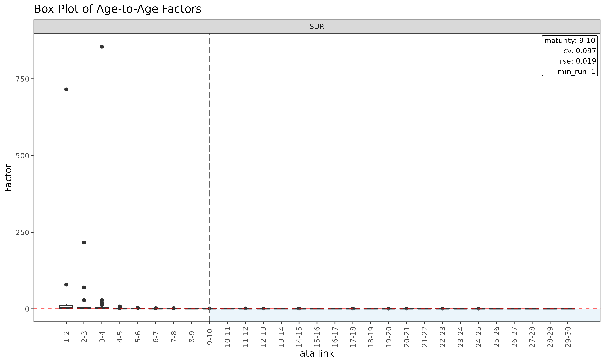
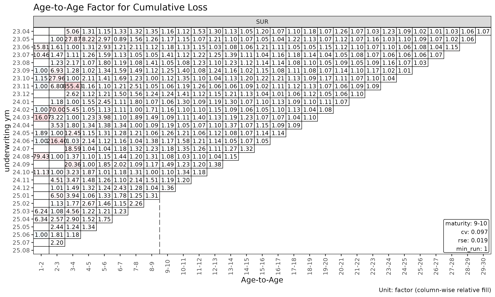
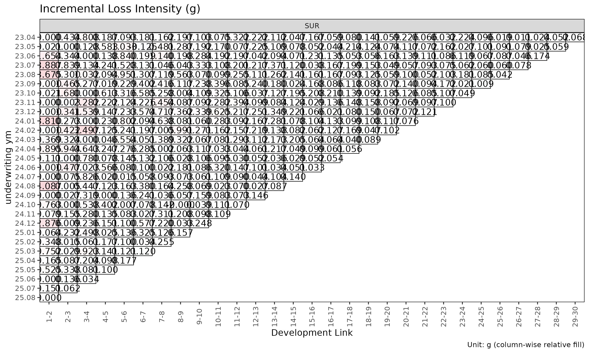

Triangle 및 ATA 진단
Source:vignettes/articles/triangle-diagnostics-ko.Rmd
triangle-diagnostics-ko.Rmd영어 원본 보기: Triangle and ATA diagnostics
chain ladder 또는 손해율 모형을 적합하기 전에 기반이 되는 triangle 을
살펴보는 것이 효율적이다. 이 문서는 코호트 발전 양상, age-to-age 인자의
안정성, 성숙점(maturity point) 탐지를 이해하기 위한
lossratio 의 진단 도구를 다룬다.
Triangle 진단
이 문서는 간결성을 위해 SUR 그룹만 사용한다 — 모든
절차는 다중 그룹 입력에도 그대로 일반화된다.
library(lossratio)
data(experience)
exp <- as_experience(experience)[cv_nm == "SUR"]
tri <- build_triangle(exp, group_var = cv_nm)코호트 궤적
plot(tri) # 코호트별 raw clr 궤적
plot(tri, value_var = "lr") # clr 대신 증분 loss ratio
plot(tri, summary = TRUE) # raw + overlay (mean / median / weighted)
summary = TRUE overlay 는 각 dev 에서 평균, 중앙값, 가중
clr 을 계산해 코호트 선 위에 겹쳐 그린다. 중심 경향에서 벗어나는
코호트를 포착하는 데 유용하다.
셀 히트맵
plot_triangle(tri) # 각 셀의 clr
plot_triangle(tri, value_var = "lr") # 증분 loss ratio
# detail 라벨은 2 줄이라 monthly 셀에서는 겹침 — quarterly 로 다시 빌드
tri_q <- build_triangle(exp, group_var = cv_nm,
cohort_var = "uyq", dev_var = "elap_q")
plot_triangle(tri_q, label_style = "detail") # 비율 + (loss / rp) 금액
dev 별 그룹 통계
sm <- summary(tri)
head(sm)
#> Key: <cv_nm, dev>
#> cv_nm dev n_obs lr_mean lr_median lr_wt clr_mean clr_median
#> <char> <int> <int> <num> <num> <num> <num> <num>
#> 1: SUR 1 30 0.0738546 0.0000000 0.07343113 0.0738546 0.0000000
#> 2: SUR 2 29 0.5365888 0.0992849 0.54126362 0.3512535 0.1120447
#> 3: SUR 3 28 0.6201189 0.2472070 0.56590118 0.4521326 0.2618096
#> 4: SUR 4 27 0.8852657 0.6387164 0.92060611 0.6327242 0.4798531
#> 5: SUR 5 26 0.5767556 0.4828899 0.59880663 0.6369307 0.5641166
#> 6: SUR 6 25 0.9314593 0.5431397 0.95085711 0.7264308 0.6191132
#> clr_wt
#> <num>
#> 1: 0.07343113
#> 2: 0.35150128
#> 3: 0.44744109
#> 4: 0.63467048
#> 5: 0.63999290
#> 6: 0.72781355(group, dev) 셀별 평균 / 중앙값 / 가중 손해율을 담은
TriangleSummary 객체를 반환한다.
Age-to-age 인자 진단
ata <- build_ata(tri, value_var = "closs")
sm <- summary(ata, alpha = 1)
head(sm)
#> Key: <cv_nm>
#> cv_nm ata_from ata_to ata_link mean median wt cv f f_se rse
#> <char> <num> <num> <fctr> <num> <num> <num> <num> <num> <num> <num>
#> 1: SUR 1 2 1-2 60.965 4.062 11.320 3.111 6.768 4.767 0.704
#> 2: SUR 2 3 2-3 15.316 2.005 2.083 2.955 1.939 1.284 0.663
#> 3: SUR 3 4 3-4 36.458 2.167 2.167 4.493 2.167 2.434 1.123
#> 4: SUR 4 5 4-5 1.641 1.282 1.291 0.854 1.291 0.115 0.089
#> 5: SUR 5 6 5-6 1.607 1.334 1.461 0.455 1.461 0.113 0.078
#> 6: SUR 6 7 6-7 1.348 1.208 1.282 0.256 1.282 0.058 0.046
#> sigma n_obs n_valid n_inf n_nan valid_ratio
#> <num> <num> <num> <num> <num> <num>
#> 1: 27972.257 29 14 0 0 0.483
#> 2: 25358.337 28 24 0 0 0.857
#> 3: 69089.724 27 27 0 0 1.000
#> 4: 4787.739 26 26 0 0 1.000
#> 5: 5301.574 25 25 0 0 1.000
#> 6: 3279.239 24 24 0 0 1.000ATA 객체의 summary() 메소드는 성숙점 탐지를
구동하는 링크별 통계를 계산한다.
-
mean,median,wt— 각 링크에서 관측된 ata 인자의 기술 평균 (해당 링크가 관측되지 않은 코호트는 제외). -
cv— 관측 인자의 변동계수 (상대 산포, alpha 와 무관). -
f— WLS 로 추정된 인자 (value_from^alpha로 볼륨 가중). -
f_se,rse— WLS 표준오차 및 상대 표준오차. -
sigma— 링크별 Mack 잔차 sigma. -
n_obs,n_valid,n_inf,n_nan,valid_ratio— 관측 수와 링크별 유한 ata 인자의 비율.
ATA 진단 플롯
plot(ata, type = "cv") # ata 링크별 CV (성숙점 overlay 포함)
plot(ata, type = "rse") # ata 링크별 RSE
plot(ata, type = "summary") # 링크별 mean / median / wt overlay
plot(ata, type = "box") # 링크별 관측 ata 의 boxplot
plot(ata, type = "point") # 링크별 관측 ata 의 산점도
ATA 인자의 Triangle
la <- list(size = 3) # 라벨 크기 줄임
plot_triangle(ata, label_args = la) # 관측 인자 히트맵
plot_triangle(ata, label_args = la, label_style = "detail") # 인자 + (loss / rp) 금액
plot_triangle(ata, label_args = la, show_maturity = TRUE) # 성숙점 라인 overlay
이 히트맵은 각 셀을 자기 링크 내에서
log(ata / median(ata)) 로 색칠하므로, 열 방향 색상은 해당
링크의 중앙값에서 벗어나는 코호트를 구분해 준다.
성숙점 탐지
성숙점(maturity point) 은 age-to-age 인자가 chain ladder 추정에
신뢰할 만큼 안정화되는 경과 기간 링크이다.
fit_lr(method = "sa") 가 ED 에서 CL 로 전환할 때 내부적으로
사용한다.
find_ata_maturity() 는 ATA 객체의
summary() 결과를 입력으로 받는다 — 먼저
summary() 로 기술/WLS 요약을 만들고, 거기서 첫 성숙 링크를
탐색한다.
sm <- summary(ata, alpha = 1)
mat <- find_ata_maturity(
sm,
cv_threshold = 0.10, # CV 가 이 값보다 작아야 함
rse_threshold = 0.05, # RSE 가 이 값보다 작아야 함
min_valid_ratio = 0.5, # 해당 링크에서 유한 코호트가 50% 이상
min_n_valid = 3L, # 유한 코호트가 최소 3개
min_run = 1L # 연속 성숙 링크 최소 1개
)
print(mat)
#> Key: <cv_nm>
#> cv_nm ata_from ata_to ata_link mean median wt cv f f_se rse
#> <char> <num> <num> <char> <num> <num> <num> <num> <num> <num> <num>
#> 1: SUR 9 10 9-10 1.188 1.172 1.165 0.097 1.165 0.022 0.019
#> sigma n_obs n_valid n_inf n_nan valid_ratio
#> <num> <num> <num> <num> <num> <num>
#> 1: 1774.278 21 21 0 0 1그룹별로 모든 임계값을 만족하는 첫 경과 기간 링크 한 행이 출력되며,
해당 링크의 전체 통계가 같이 실린다. 임계값 인자들은 반환 객체의
attribute 로도 저장된다. find_ata_maturity() 는
maturity_args 가 주어진 경우 fit_ata() 와
fit_cl() 내부에서도 호출된다 (내부 summary()
단계의 alpha 는 호출자의 값을 그대로 받는다).
임계값은 포트폴리오의 변동성 프로파일에 맞춰 조정한다. 임계값을
빡빡하게 (예: cv_threshold = 0.05) 잡으면 성숙점이 뒤로
밀리고, 느슨하게 잡으면 앞으로 당겨진다.
ED 진단
ed <- build_ed(tri, loss_var = "closs", exposure_var = "crp")
sm <- summary(ed, alpha = 1)
head(sm)
#> Key: <cv_nm>
#> cv_nm ata_from ata_to ata_link mean median wt cv g
#> <char> <num> <num> <fctr> <num> <num> <num> <num> <num>
#> 1: SUR 1 2 1-2 0.83638 0.11124 0.78549 1.64664 0.78549
#> 2: SUR 2 3 2-3 0.42921 0.19355 0.39517 1.28530 0.39517
#> 3: SUR 3 4 3-4 0.57740 0.28022 0.54349 1.36754 0.54349
#> 4: SUR 4 5 4-5 0.18873 0.13962 0.18976 0.90510 0.18976
#> 5: SUR 5 6 5-6 0.29944 0.16294 0.30277 1.01004 0.30277
#> 6: SUR 6 7 6-7 0.21583 0.18880 0.20988 0.85987 0.20988
#> g_se rse sigma n_obs n_valid n_inf n_nan valid_ratio
#> <num> <num> <num> <num> <num> <num> <num> <num>
#> 1: 0.24877 0.31671 5291.085 29 29 0 0 1
#> 2: 0.09984 0.25264 3263.751 28 28 0 0 1
#> 3: 0.14933 0.27477 6210.872 27 27 0 0 1
#> 4: 0.03343 0.17615 1720.934 26 26 0 0 1
#> 5: 0.06037 0.19939 3487.836 25 25 0 0 1
#> 6: 0.03771 0.17970 2450.547 24 24 0 0 1
plot(ed, type = "summary")
plot(ed, type = "box")
plot_triangle(ed)
ED 객체의 summary() 메소드는
ATA 객체의 summary() 에 대응하는 ED 측
분석으로, 강도
에 대해 링크별 통계를 계산한다.
빌드 전 검증
경과 기간 시퀀스에 결손이 의심되면 build_triangle() 호출
전에 점검한다.
gaps <- validate_triangle(exp, group_var = cv_nm,
cohort_var = "uym", dev_var = "elap_m")
head(gaps)
#> Empty data.table (0 rows and 5 cols): cv_nm,uym,n_observed,n_expected,missing경과 기간이 비연속인 코호트마다 한 행씩을 담은
TriangleValidation 객체를 반환한다. 결과가 비어 있다면
triangle 이 깨끗하다는 뜻이다.
결손이 있는 경우의 선택지는 다음과 같다.
- 데이터 원본을 수정한다 (권장).
- 문제가 있는 코호트를 제외한다.
-
build_triangle()에fill_gaps = TRUE를 넘겨 누락 셀을 0 으로 채운다 (단,n_obs가 부풀어 오르므로 신중히 사용).
최근 대각선 부분집합
오래된 코호트가 더 이상 대표성이 없을 때 (요율 변경, 적립 regime 변경 등) 추정을 최근 대각선으로 제한한다.
fit_ata(ata, alpha = 1, recent = 12) # 최근 12개 대각선
#> <ATAFit>
#> alpha : 1
#> sigma_method: min_last2
#> recent : 12
#> regime_break: none
#> use_maturity: FALSE
#> groups : cv_nm
#> n_groups : 1
#> ata links : 29
fit_cl(tri, value_var = "closs", recent = 12)
#> <CLFit>
#> method : basic
#> value_var : closs
#> weight_var : none
#> alpha : 1
#> recent : 12
#> use_maturity: FALSE
#> tail_factor : 1
#> groups : cv_nm
#> periods : 30
fit_lr(tri, recent = 12)
#> <LRFit>
#> method : sa
#> loss_var : closs
#> exposure_var : crp
#> loss_alpha : 1
#> exposure_alpha: 1
#> delta_method : simple
#> conf_level : 0.95
#> ci_type : analytical
#> sigma_method : min_last2
#> recent : 12
#> regime_break : none
#> maturity[SUR] : 18
#> groups : cv_nm
#> periods : 30recent = K 는 calendar 위치
(rank(cohort) + dev - 1) 가 그룹 내 최근 K
개에 속하는 행만 남긴다.
워크플로 체크리스트
적합 전에 확인할 사항은 다음과 같다.
-
validate_triangle()— 스키마와 결손 점검. -
build_triangle()— 파생 컬럼이 포함된 표준 형태 구축. -
plot(tri)/plot_triangle(tri)— 시각적 점검. -
summary(tri)— 그룹 수준 중심 경향 확인. -
build_ata()+plot(ata, type = "cv")— 링크 안정성 확인. -
find_ata_maturity()— 그룹별로 합리적 성숙점이 잡히는지 확인. -
detect_cohort_regime()(선택) — 구조적 변화 진단.
함께 보기
-
vignette("getting-started")— 전체 파이프라인 개요. -
vignette("regime-detection")—detect_cohort_regime()심화. -
vignette("loss-ratio-methods")— 추정 방법 선택.